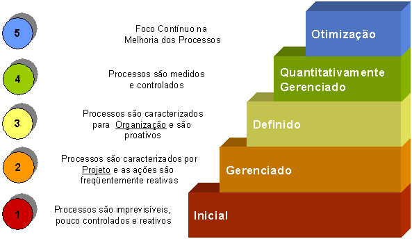

O que é CMMI?
Criado pelo Software Engineering Institute (SEI), o CMMI é um dos modelos mais reconhecidos globalmente para aprimorar processos de negócios. Ele estabelece uma série de práticas que, quando implementadas, ajudam a organizar o trabalho, reduzir custos e aumentar a qualidade do produto final.
Os 5 Níveis de Maturidade do CMMI
A estrutura do CMMI é baseada em 5 níveis que representam a maturidade do processo de uma organização.
Nível 1: Inicial
O processo é imprevisível, mal controlado e reativo. O sucesso depende do heroísmo individual, e o ambiente de trabalho é caótico. Não há processos definidos.
Nível 2: Gerenciado
Os projetos são planejados, executados e monitorados. Há processos básicos documentados e geridos a nível de projeto, mas não em toda a organização.
Nível 3: Definido
Os processos são padronizados para toda a organização. Há um conjunto de processos padrão que é adaptado para cada projeto específico, o que aumenta a previsibilidade.
Nível 4: Gerenciado Quantitativamente
A organização usa dados e métricas para controlar os processos. Há metas de desempenho quantitativas e a gestão é baseada em estatísticas e análises preditivas.
Nível 5: Em Otimização
O foco é na melhoria contínua dos processos. A organização identifica e implementa mudanças para otimizar o desempenho, usando as métricas do Nível 4 para buscar excelência.